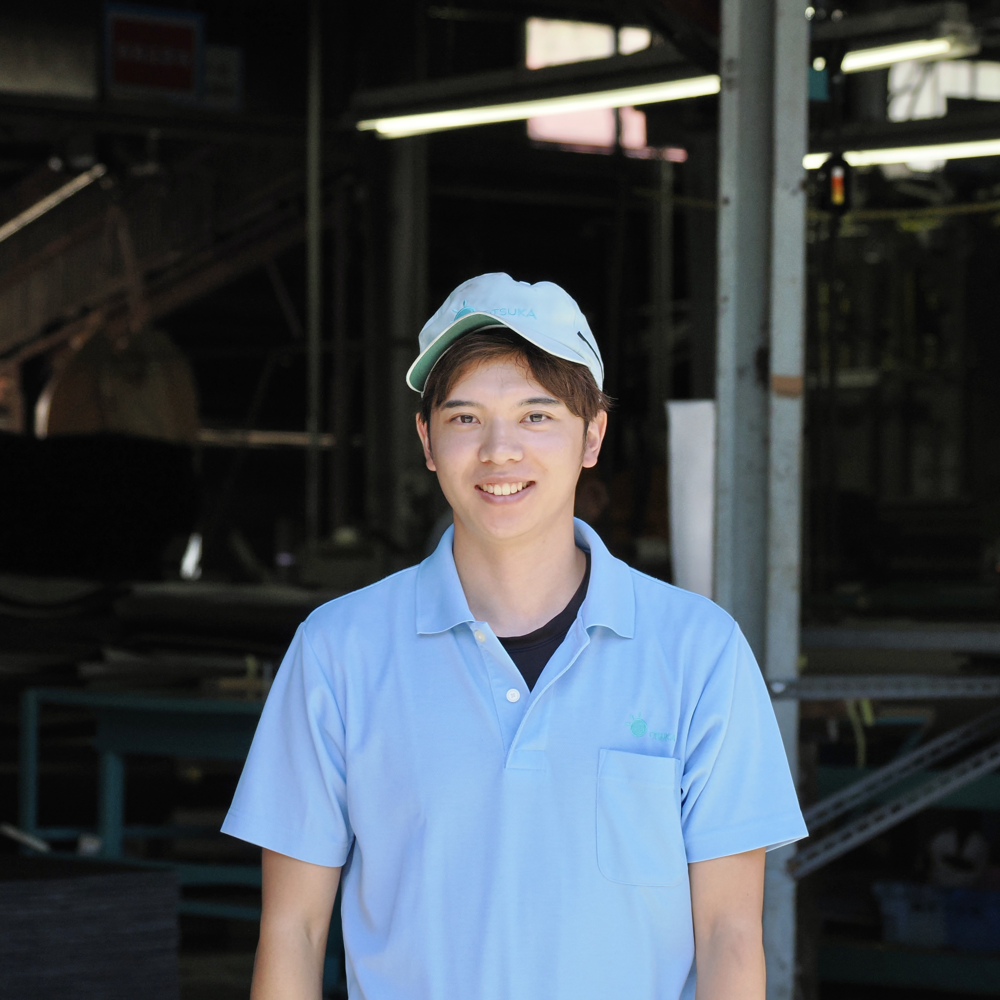
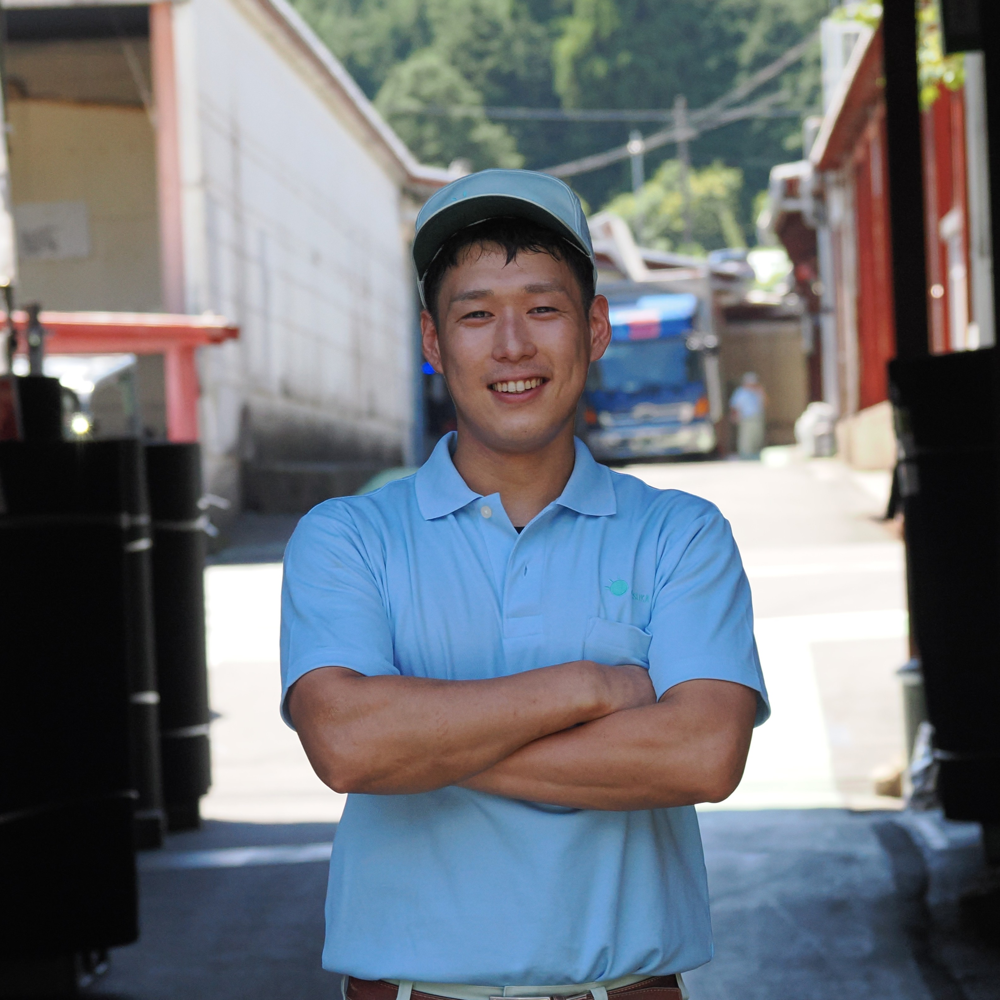

ものづくりの中核を担い、高品質な製品を世に届ける仕事です。

機械の微妙な変化に気づいて、自分で調整してビシッと決まったときの気持ちよさ、これがやめられないんですよ！

「おーい、ちょっといい？」ってお互い声をかけ合える職場なんですよ！ものをつくることが好きな人には、本当に向いてる仕事だと思いますね。
製造ライン上の製品の動きを見ながら、機械の状態や製品品質を監視します。異常や変化があれば条件調整を行い、安定した製造を維持します。
製造前・稼働中に機械の点検と条件確認を実施します。安全と品質を守るための重要作業です。
製造・成形を行い、品質管理をしながら梱包まで担当します。状況に応じて清掃や簡単なメンテナンスも行います。
※業務内容は生産計画や配属先により変動します